Disconnected
It's been very challenging these past few months to push out new articles. In addition to making consistent, regular updates to GBE+, work on my upcoming book consumes a great deal of time. Despite the lack of updates here on this site, there has been some amazing progress regarding Game Boy hardware preservation. We're getting very close to the point where only a meager handful of officially licensed devices remain unemulated. Even now, that list is shrinking bit by bit. That has resulted in a sizable backlog of material I need to write about. Perhaps the best place to start is with an update to a piece I published nearly 4 years ago. It's finally time to take another look at the Mobile Adapter GB.
Last time, the focus was two different titles: Mobile Trainer and Net de Get. To review, the first acted as a sort of setup guide for the Mobile Adapter, taking users through the process of logging into the DION network with their credentials. It also served as an email client and a basic web browser. Net de Get was an ambitious collection of minigames where users could download more from Nintendo's servers. At the time, it was the Game Boy's most extensive use of downloadable content, with a total of 23 additional minigames offered to players, all of which could be saved to the cartridge's flash ROM. These two entries of the Mobile Adapter's library are but a small sampling of what the hardware was capable of. Over the past few years, the Reverse Engineering Open Network group has managed to figure out how a few more games worked with the adapter. This installment of the Edge of Emulation will examine 3 in particular: Game Boy Wars 3, Hello Kitty: Happy House, and Zen Nihon GT Senshuken.
The range of genres covered here is pretty wide, with a turn-based war strategy game, a child-friendly life simulation game, and a competitive racing game. For a brief moment in time, the Game Boy hosted various forms of internet connectivity, arguably some of the most extensive ever seen on any of Nintendo's platforms back then. Unfortunately, the Mobile Adapter was not supported for very long, and most of the material disappeared when its servers were went offline at the end of 2002. Thankfully, all is not lost. Researchers can apply a number of techniques that often reveal the inner workings of these games. Although the task may seem daunting and impossible at first glance, we can still ressurrect many of the online components that have laid dormant for nearly 20 years.
Game Boy Wars 3 - Maps
In 2001, Intelligent Systems (and later Hudson) developed Game Boy Wars 3 for the Game Boy Color. It was a continuation of the Game Boy Wars series, which itself was part of the larger Wars franchise. While these games date back all the way to the Famicom and Super Famicom, gamers today are probably most familiar with titles such as Advance Wars on the GBA. Battles take place on an offset-square grid map, with different units vying for supremacy in all-out combat. Many of the mechanics are the same as in Advance Wars, such as creating new units to fight, capturing cities, factories, and ports, and managing funds and resources. The game was a Japanese exclusive, and by all accounts a fairly late arrival, coming out at the tail-end of the GBC's lifetime.
Game Boy Wars 3 managed to make relatively good use of the Mobile Adapter. It would be wonderful to say that it allowed online head-to-head battles, but unfortunately that was not the case. Multiplayer was strictly reserved for the Link Cable or infrared port (which is actually interesting, as very few GBC games used the infrared port for multiplayer). However, it still offered plenty of interesting features. First and foremost, users could download custom maps, allowing them to try their hand on new terrains or scenarios. Secondly, connecting online allowed players to summon "mercenary units" that had different stats than regular ones, for a price. Lastly, special messages could be downloaded, and any attached medals could be used to upgrade units.
As I recall, I initially investigated Game Boy Wars 3 around 2018 and again in late 2019. Between leaving all my previous notes on my old computer after an upgrade, surviving a multi-year pandemic, and not having touched the game in ages, my memory is a little fuzzy on all the exact details. Nevertheless, I will try to put together an account of how some of the online content was restored. So, how exactly does that happen anyway? The servers hosting any downloads have long been shut down. Dumping save data is not typically a viable option. Any data saved to a cartridge's SRAM is at the mercy of the installed battery and its lifespan. Furthermore, it's pure random chance that any given secondhand cartridge ever connected online anyway, given the Mobile Adapter's poor sales figures and low adoption.
Fortunately, the game's ROM itself has all of the network handling code built-in. An emulator can monitor any attempts to send data over a network connection, regardless of whether that connection actually exists. Parallel to that, an emulator can generate a response and observe how the ROM's code handles that, regardless of whether the response was correct or not. By watching and controlling both ends of communication, an overall picture of the client-server architecture slowly builds up. Unlike modern online games, Mobile Adapter compatible titles very, very rarely downloaded any sort of executable code. As far as I'm aware of, Net de Get's minigames are the only known example, although we could discover more in the future. At any rate, all the code needed to run online functions for these games are locally stored, thus always available for analysis.
Debugging Game Boy Wars 3 started off with accessing various online menus and seeing what types of requests were made to a server. This essentially comes down to looking at what sort of HTTP GET requests were issued, specifically what URL the game wanted. GBE+ has a generic 404 response when a URL can't be found, but it also has a very simplified method of adding files to an emulated server. It's basically just a giant text file that acts as a list of known URLs referenced by games and a path to a local PC file. This makes injecting new files quite easy and fast. The first thing I tried with Game Boy Wars 3 was downloading maps, and the URL I encountered was /cgb/download?name=/18/CGB-BWWJ/0.map_menu.txt. Creating a blank text file was enough to trick Game Boy Wars 3 into sending another GET request to the URL /cgb/download?name=/18/CGB-BWWJ/map/0/map_.cgb, which I assumed contained the map data.
However, it would only attempt to download map data if I specifically asked for Map 0000. Game Boy Wars allows users to give a 4-digit ID that represents the map they wish to download. I assume players could look up different maps in magazines or websites. Any number that was not 0000 was deemed invalid. It looked like the file 0.map_menu.txt was key to getting map downloads working. It seemed straightforward enough, just a mere text file. I put some random characters in the file, then traced where those same values were later processed in the Game Boy's RAM. The code here dealt with string handling, naturally. Evidently, it wanted at least 3 separate groups of characters split by whitespace. I had no idea what it wanted exactly, as no other checks were performed in the block of code I had examined. I kept putting in different variations until one of them was mysteriously accepted by the game. I typed in "0002 0003 RAWR" and selected Map 0002, and now it seemingly let me download a new map!
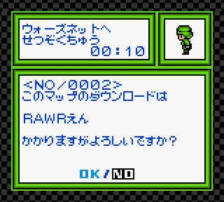
This new map only costs RAWR dollars. Surprisingly cheap!
It was now obvious that the 3rd string in 0.map_menu.txt was supposed to be the amount of yen charged for the map download. Based on my tests, the 1st string appeared to be a sort of minimum valid map number. Anything smaller than that was dismissed. Logically, the 2nd string would dictate the maximum valid map number, and further tests proved that correct. The map download initially worked with a blank file because default the minimum valid map number is zero. Just as well, the default maximum is zero too, so that explained why I could not get any other map besides Map 0000 to work. The URL changes to reflect the exact map being downloaded. For example, Map 1122 is pulled from /cgb/download?name=/18/CGB-BWWJ/map/1/map_1122.cgb.
A brief note on the Mobile Adapter's URLs, any file prefixed with a number indicates a "service charge" to be applied by the mobile provider. The map menu is free, but the map data itself was supposed to cost 10 yen. The game actually downloads another file called /cgb/download?name=/18/CGB-BWWJ/charge/10.charge.cgb just for that purpose. The contents of the file are irrelevant, as its only purpose was to be flagged and billed.
Moving on, the next goal was to download a real, fully functional map. The question was, what exactly did the map data look like? There were no examples of downloadable maps, as no one had saved or preserved them over the years. As luck would have it, however, Game Boy Wars 3 comes with its own map editor. The game saved downloadable maps alongside custom-made ones. This indicated that perhaps all maps shared the same structure, no matter where they came from. By making my own maps, I could study the format and perhaps come up with something that could be downloaded. I made 2 small maps, saved them both, then opened the game's save file in a hex editor. I compared this save file with a fresh one from a "new game" to see what data changed, meaning what map data had been added. By having 2 complete maps in the save, I could see exactly where the data was supposed to start and where it should end.
I made a guess and decided to copy the entire data for one map from the save file. Amazingly, that worked perfectly! Game Boy Wars 3 saw the server response and saved the map without issues. It opened just fine and was playable as far as I could tell. It was literally a Copy+Paste job. I was quite relieved at how easy the process was. Still, I took the time to reverse-engineer and document the map format completely, changing a few bytes here and there to see what happened. Ultimately, it's now possible to create custom maps and have an emulator download them. While we don't have the maps Hudson originally made, we can still bring a few of them back to life. At least 1 map was previewed in a Japanese magazine. Although it's just a mere screenshot, it can be rebuilt with the map editor and added to an emulated server.
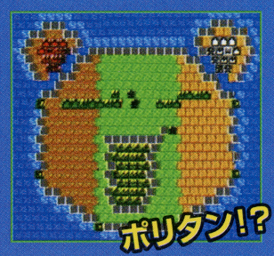 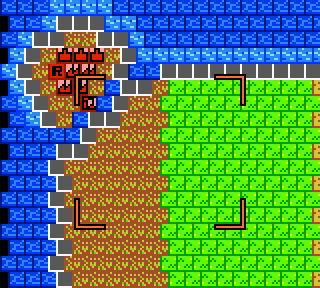
With a mere photo and some eyeballing, we can recreate downloadable maps even if they're no longer online.
Game Boy Wars 3 - Mercenary Units
Game Boy Wars 3 featured special locations on certain maps called "Transmission Towers" during the solo-player campaign. By selecting them, players could summon for-hire units that would fight on their behalf. The game connected the Mobile Adapter GB to Nintendo's servers, which then allowed the unit to appear on the battlefield. Units for infantry, anti-air vehicles, tanks, bomber jets, and frigates were available. As in real life, these mercenaries didn't work for free. A small fee (10 yen) was charged for each one.
The mercenaries had better stats than regular units, giving players an edge on their opponents. In truth, mercenary units themselves were not downloaded over the internet. Instead, the Mobile Adapter GB merely "unlocked" them, and payment from the player served as the key. If this pattern seems familiar to modern gamers, that's because it's essentially a microtransaction with a little bit of pay-to-win thrown in there. It's both fascinating and perhaps somewhat disappointing to see such a controversial practice appear on the Game Boy back in 2001. However, thanks to emulation, no one has participate in that nonsense anymore.
The first step towards preserving this aspect of the game is getting to a Transmission Tower. They only appear later in the campaign, so they're not immediately accessible. Rather than play through several missions, I had another idea. Since the map format was completely figured out, I could just make my own map that had a Transmission Tower and use that. The in-game map editor doesn't allow players to set any Transmission Towers. I had to take a more indirect route and manually change the game's save file in a hex editor. The map was just small island with a couple of bases and a single tower.
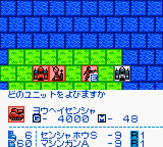
With a bit of hacking, the Transmission Tower can be accessed in custom maps.
Game Boy Wars 3 loaded the map just fine, but the real question was whether or not the Transmission Tower would function properly. Conceivably, the tower was supposed to be restricted to the campaign, so I didn't know if there were any mechanisms that would prevent it from launching while playing custom maps. Thankfully, no such check existed. Perhaps the developers never thought make such a restriction. Alternatively, maybe some downloadable maps had Transmission Towers, so they couldn't add that campaign-only restriction. Either way, I could now easily reach the tower and begin testing it.
The Transmission Tower needed to be captured first in order for me to use it. To save on time, I just edited the map so that the tower was already in my possession. At that point, a new menu option became available during my turn. I could select which type of mercenary I wanted, and afterward the software logged onto a server through the Mobile Adapter GB. It fetched a single URL: /cgb/download?name=/18/CGB-BWWJ/0.youhei_menu.txt. The word "youhei" or "傭兵" means mercenary soldier in Japanese, so right away I could tell it was trying to download some relevant information. GBE+ returned a 404 error code as this file didn't yet exist for the emulator to grab. I made an empty file just to see what would happen and... well, it worked!
After a brief animation, my new mercenary unit was placed on the map. It didn't matter what type I wanted; they were all valid. So what was the point of 0.youhei_menu.txt? I noticed that the confirmation screen after the download said I'd been charged random characters in yen instead of an actual number. So, not only had I actually gotten the mercenary unit for free, but the amount wasn't even legit. This seemed like a clue that the text file Game Boy Wars 3 was downloading was probably just a list of prices for each mercenary unit class. A simple test proved this correct. The game parsed any numbers separated by whitespace. Simply putting in 6 different numbers (for each type of unit) correctly displayed the yen to be charged. This was also reflected when the game downloaded the /cgb/download?name=/18/CGB-BWWJ/charge/***.charge.cgb files, where *** was the yen.
Once again, prefixing a file with a number triggered a service charge when using the Mobile Adapter GB. This was the mechanism by which these games had users pay for different things at different prices. Thankfully, none of that really applies to this kind of hardware/software emulation, where all the communication happens inside a local computer. Even if GBE+ were to emulate a live HTTP connection with a recreated game server, there's no reason it should cost anything whatsoever. Obviously, however, nothing is stopping anyone from emulating the money part of the network. In fact, without real cash transactions, can we really consider it accurate emulation?
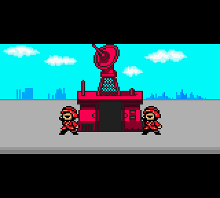 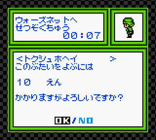 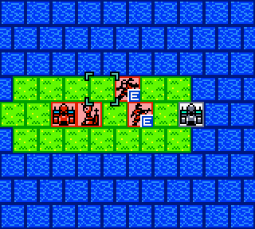
Once the Transmission Tower is captured, players can summon powerful mercenaries to the battlefield... once they pay!
Game Boy Wars 3 - Mail
Under various circumstances, such as downloading a map or using the Transmission Tower, a special message would be mailed to players from the so-called "Wars Net Center". Attached to these messages were medals that could enhance units in the campaign, giving them a boost in combat. Presumably, Nintendo et al could push out update messages as well, if they so desired. This was the final part of Game Boy Wars 3 that needed to be emulated, and it turned out to be the most complicated as well.
First, I selected the option to access the Wars Net Center in the game's Network options. After that, the game tried to connect to a server via the URL /cgb/download?name=/18/CGB-BWWJ/mbox/mbox_serial.txt. If I used a blank file, Game Boy Wars would make another request to the URL /cgb/download?name=/18/CGB-BWWJ/mbox/mbox_00.cgb. Again, I used another blank file, but the game did not seem to like that at all, as it completely froze. Apparently, I was going to have to disassemble the code responsible for processing both of these files in order to truly understand what was going on.
mbox_serial.txt turned out to be relatively simple. According to the ROM's programming, it should have been an ordinary text file consisting of 16 separate lines. Each line was just a number written in ASCII. I set every line to zero to see what would happen. When I ran GBE+ again and tried grabbing more mail messages, this time the game didn't freeze. However, it also skipped the part where it requested mbox_00.cgb. From this behavior, I gathered that mbox_serial.txt had some role in controlling when the server looked up a mailbox while mbox_00.cgb had the actual contents of the message.
It seemed like non-zero values triggered the game to pull up a mailbox. Interestingly enough, depending on which of the 16 lines I changed, a different mailbox was pulled up. For example, if I altered the 13th line, the game would request mbox_12.cgb. I chose to stick with the first mailbox to keep things straightforward. Now I just needed to know what the contents of the mailbox file should look like. I spent quite a lot of time mucking around the ROM. A lot of the code was geared towards handling text, and overall it wasn't pretty or easy to follow. Ultimately, as far as I could tell, the first 7 bytes of the file were ignored and the rest could be ASCII. After playing with it for a bit, I was able to get a full, custom message sent.
Unfortunately, I wasn't able to completely reverse-engineer everything. The messages didn't have titles and weren't numbered or dated properly either. Additionally, no medals were actually received. On the positive side, however, the game did send "Download Badges" whenever a map was downloaded or a mercenary unit was called up. It's definitely something I'll have to tackle in the future. Honestly, back in 2019, I got fed up tracing my way through the game's code for hours without success and wanted to work on other more productive tasks. Perhaps after spending a few years away from the game, its mysterious mail messages will be a little less frustrating next time.
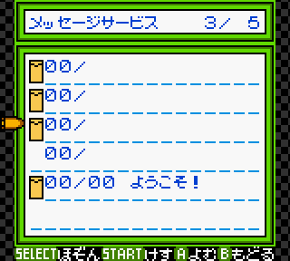 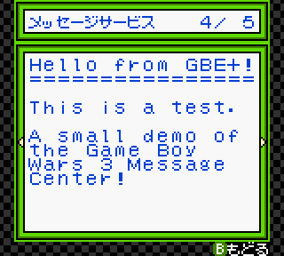
Although far from perfect, GBE+ is now at least able to emulate the bare minimum of the Message Center.
Hello Kitty no Happy House - Mail
Hello Kitty no Happy House was a very late entry for the Mobile Adapter GB, released on March 2, 2002. Keep in mind that the service for the adapter shut down in mid-December of that same year. The game revolves around a house owned by Hello Kitty which the player can decorate with various bits of furniture earned through minigames and tasks like that. The furniture then influences Hello Kitty's actions and behaviors. It's not quite Animal Crossing, but it was a very easy-going and pleasant game for younger audiences and Sanrio fans. The Mobile Adapter GB allowed players to send each other furniture through e-mail.
This game wasn't much of a challege. I was actually quite thankful for that, given how involved Game Boy Wars 3 had been. Its online features revolved exclusively around sending and receiving messages through SMTP and POP3. GBE+ already emulated its own internal e-mail server, so the only thing I needed to know was what exactly the e-mail looked like. My plan was to first acquire a piece of furniture through the minigames, attach it to a message, send the e-mail, and see what the format of the outgoing e-mail looked like.
Obviously, when GBE+ sends an e-mail through its internally emulated SMTP server, the message goes to oblivion. It's ignored and discarded, since there's really no recipient. However, for this case, I wanted to see what the structure of the message was to identify how furniture was being sent. Additionally, if I took that format and made it so I received that message, I would hopefully get that furniture in my inbox. This is what the data roughly looked like when GBE+ sent an e-mail:
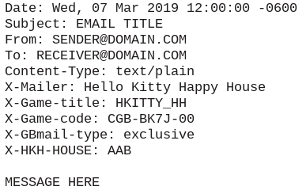
At a glance, the most striking thing about this e-mail was the amount of custom headers it was using, such as X-Mailer and X-Game-title. These were not standard, and they appeared to have been used internally by Nintendo's servers. The furniture itself was not sent as an e-mail attachment. It wouldn't make sense to do that, because all of the furniture's data is already stored in the game's ROM. Instead, a more efficient method is to just send an index or a number that represents the furniture. Essentially, the e-mail should tell the recepient's game "Hey, you got this message from a friend. You unlocked Item #123." and then Item #123 is enabled in their inventory.
I sent this e-mail to myself, and it worked as I expected. I received the same item I'd just gotten from that earlier minigame. Now I just had to find the index and start changing its value. The only thing that looked like any sort of index was the X-HKH-HOUSE header, so I changed it to read AAC and sent a new e-mail. My predictions were correct, and a new item was delivered to my mailbox. From here, most of the remaining work was figuring out what items were generated by which index values. Overall, there were a total of 120 unique pieces of furniture that players could trade over e-mail. Most of the stuff is cute and fun, like dolls, paintings, and toy sets, but there was at least one questionable object in the form of a massage chair...
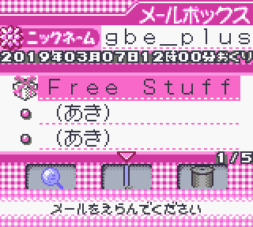 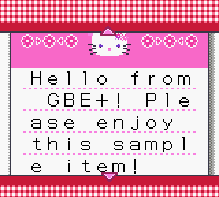 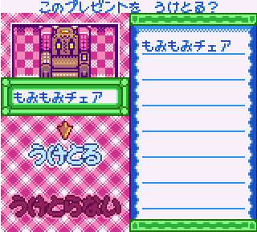
They could have used マッサージチェア (massage chair), but put もみもみチェア, which can have... certain connotations, I guess.
That about wraps it up for Hello Kitty no Happy House. There isn't a lot to its online features. It wasn't very challenging, but it was kind of fun documenting all of the different items that appeared. Some combinations of the 3-letter codes sent via email can produce the same item. After cataloging them all, it turns out the game is actually treating the letters as numbers, something like A = 0, B = 1, C = 2, ... and so on. Each item is just an ID from 1 - 120. As an example, the Hanging Scroll decoration is the 10th item in the game's internal list. It can be written in two forms: AAK = (0 * 100) + (0 * 10) + (10 * 1) and ABA = (0 * 100) + (1 * 10) + (0 * 0). It treats each letter as representing magnitudes of ones, tens, or hundreds. It may seem weird, but that's just how it works.
Zen Nihon GT Senshuken - Downloadable Courses
Zen Nihon GT Senshuken was a launch title for the GBA over in Japan. It was an early racing game made by Kemco that tried to demonstrate the increased capabilities of Nintendo's latest handheld system. It would be released in the West as Top Gear GT Championship. Unfortunately, it received middling reviews in all regions. Zen Nihon GT, however, was quite notable for pushing a lot Mobile Adapter GB features for a launch title. After the adapter's late arrival at the beginning of 2001, Kemco at least attempted to help the accessory gain some ground in the market.
Zen Nihon GT itself is a pretty standard professional racing game, with championship modes, time trials, a custom track editor, and quick races against CPU players. Its online components were fairly extensive, featuring the likes of ranked leaderboards, downloadable racetracks, and downloadable Ghost Data. The racetracks seemed like the easiest target for me to focus on. Based on my experiences with Game Boy Wars 3, I expected Zen Nihon GT to use the same format for its custom track editor for downloadable courses. For the game developers at Kemco, it probably just made sense. Why make a separate format just for online downloads? I figured I could just make a small racetrack myself and locate that in the game save, then use that same data when Zen Nihon GT wanted to start the download.
Finding the custom racetrack data in the game save was simple enough. It's essentially a "spot the difference" task when looking at the save in a hex editor before and after the course was made. The next step was to start analyzing any URL requests coming from the emulated adapter. Right away, Zen Nihon GT asks for the file /cgb/download?name=/28/AGB-AGTJ/gtconfig.cgb. My first instinct was to just make this a blank file and see what happened, but the game ultimately rejected that. I had to peek inside the code to find out how the game was processing this file and what kind of data it needed.
Normally, for older DMG and GBC games, I'd just use GBE+'s debugger and piece things together manually with my own disassembly. Up until recently, I did the same for GBA games. Thankfully, a better, faster solution existed. Ghidra is an open-source reverse-engineering tool developed by everyone's favorite 3-letter American agency, the NSA. It's been used by many security researchers to pick apart stuff like malware or probe suspicious firmware, but it's also been used by emudevs to crack open game software. I first heard about Ghidra when it was featured on the Dolphin Emulator's blog about proper Wii MotionPlus emulation. Under the right circumstances, Ghidra can take raw CPU instructions and turn them into mostly readable C code via decompilation. You won't get function names or variable names that make sense, and none of the generated code will be commented, but you will get a better view of what the game's code is trying to do and how it flows together.
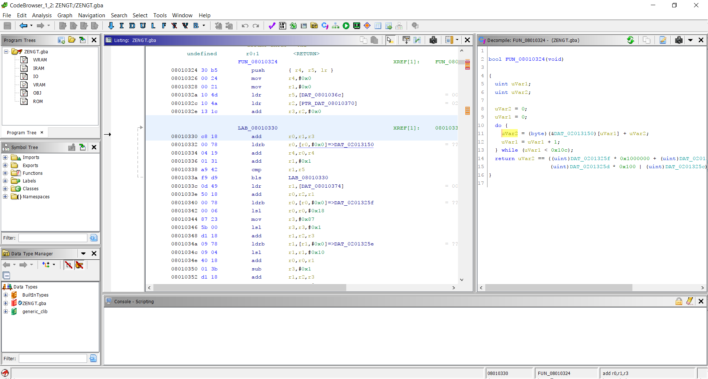
When used correctly, Ghidra is an incredible debugging tool, capable of competing with IDA Pro in some respects.
So, while Ghidra isn't quite magic, it's incredibly powerful and useful. In my case, I located the exact position in the code where it started parsing the data from gtconfig.cgb. As it turned out, this file needed to be a specific length, exactly 200 bytes. Additionally, the last 4 bytes were supposed to be a checksum for the file, just a simple 32-bit number of all the previous 196 bytes added together. I had no idea what the rest of the values inside the file should look like, so for the time being, I just left them as zeroes.
The racetrack download process continued, and then a new file was requested: 100.gtexcrs000.cgb. This seemed like it was supposed to be the racetrack data itself. It had a 100 yen service charge prefix, and the filename itself looked like shorthand for "GT Extra Courses", so I knew I was going in the right direction. Once again, I had to rely on Ghidra to determine what data to put inside the file.
The first part of gtexcrs000.cgb was some 32-bit value that got ignored later on. The following section dealt with string parsing, which I later found out was the title of the racetrack. It was neither ASCII nor Shift-JIS, but rather a unique 16-bit character encoding likely specific to Zen Nihon GT. Fortunately, the custom racetrack data I'd pulled from my game save had a similar string I could use. After the title, the actual course data itself came, which again was a simple Copy+Paste job from my game save. The last 4 bytes were predictably another 32-bit checksum.
I quickly constructed my own version of gtexcrs000.cgb and let GBE+ download that. To my delight, it worked perfectly! The track was incredibly simple, just a small circular course where 1 lap took a total of 10 seconds or less. Nevertheless, it demonstrated how this part of Zen Nihon GT's online capabilities could be restored. Each track is basically a 10x6 grid of blocks. Each block can contain a piece of the racetrack going straight or making a turn. Regrettably, all of the turns are 90 degrees, players can't download courses that are as sophisticated as the ones found in the game's championship or quick race modes, which allow for slight bends, curves, and longer stretches of road.
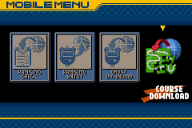 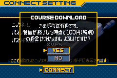 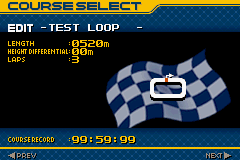
Courses downloaded online were saved locally to the game cartridge.
Zen Nihon GT Senshuken - Ghost Data
After downloadable racetracks, I targeted downloadable Ghost Data next. For those that aren't familiar with the term, in racing games, Ghosts are recordings of a player's actions during a Time Trial run. Whenever the player turns left or right, for example, this data is saved to the Ghost. Once a Time Trial is complete, players can race against that same data. During a new Time Trial, if the Ghost Data is loaded, a sort of "shadow racer" appears on-screen, usually as a semi-transparent car. The player cannot interact with the Ghost, as it's just a visual representation of a previous race. The goal for the player is to beat the previous completion time using the Ghost as a guide. Often Ghost Data is used for players to "race against themselves", but some games allow players to exchange Ghost Data to compete against others.
Zen Nihon GT allowed players to download Ghost Data from Nintendo's servers. I'm not certain whether Kemco themselves provided the Ghost Data, or if they redistributed Ghost Data submitted by users for the leaderboards. At any rate, it seemed easy enough to replicate the download process in GBE+. Like the downloadable courses, the Ghost Data itself is saved to the cartridge's flash memory. In theory, all I had to do was copy this data whenever the game requested it via the Mobile Adapter.
I first tried to see what files the game was pulling from the server. Selecting the Ghost Data download option pulled up gtconfig.cgb again, but then 7 new ones as well: /cgb/download?name=/28/AGB-AGTJ/gtgst**.cgb, where ** represented values 00 through 06. I went to Ghidra again to see what the code was doing when it received these files. As far as I could tell, each one was 2532 bytes long and the last 4 bytes were for another 32-bit checksum.
The code was clearly grabbing other values from the file and parsing them, but I couldn't see the larger picture of what those bytes were doing. Naturally, I fell back to the timeless method of making files of my own with random data and seeing what happened as a result. Evidently, each of the gtgst**.cgb files was actually the data for a menu. On this menu screen, 7 different tracks are presented, and each track offered a total of 30 Ghosts. After manually playing around with the values, I managed to get a better idea of what the menu data looked like.
Each of the 7 racetracks had a field that described the most recent Ghost Data update in the format YYYY-MM-DD (which is honestly the only sane way to write dates). Each of the 30 Ghost Data menu entries had data describing the weather conditions of the race (sunny or rainy), the type of car used, the type of transmission used, handicap weights, the name of the player for the Ghost, the Ghost completion time, and most importantly a URL for the actual Ghost Data file.
As I suspected, it was mostly yet another Copy+Paste job, taking data from the game's save and feeding it back to GBE+ when fetching the Ghost. I got it to work on my first try. The downloaded Ghost Data copies a lot of the metadata found in the menu entries. The most interesting thing about the Ghost Data is that it has no checksum. This is due to the fact that the Ghost Data does not have a defined file size. It could be relatively large or small depending on the racetrack and the movements of the Ghost, so however many bytes it needs will vary. The file itself doesn't have a header to describe its the length of the Ghost Data either.
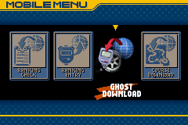 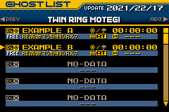 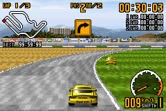
Ghost Data for multiple courses could be downloaded and raced against.
Zen Nihon GT Senshuken - Rankings
Perhaps one of the most interesting features of Zen Nihon GT was its competitive leaderboard. While this aspect of online gaming typically isn't something associated with 2001 handhelds, Zen Nihon GT made it possible of the GBA. Rankings could be pulled from Nintendo's servers, and players could submit their own Ghost Data to see if they had what it took to reach the top.
As it turned out, downloading the rankings was very similar to downloading Ghost Data. The game requested 7 files, this time from the URL /cgb/download?name=/28/AGB-AGTJ/gtrk**.cgb, where ** represented values 00 through 06. So, it was grabbing ranks for each available racetrack. Each file measured 2612 bytes and was in fact just a menu and a 32-bit checksum. Each menu had 50 entries with metadata about the racer, the car they used, handicap weights, weather condition, and course completion time. This was all in the same format as the Ghost Data, so at this point I was quite familiar with it. In short order, I made myself a couple of files with a bunch of fake rankings. GBE+ gave these files to the game, and Zen Nihon GT displayed them without issue.
Receiving rankings was surprisingly straightforward. Sending Ghost Data for online rankings turned out to be simple as well, but rather fascinating. Zen Nihon GT just sends the Ghost Data as an email attachment via SMTP. As an emulator, GBE+ doesn't have to do much here, just properly handle any SMTP commands that come its way. The email got trashed, of course, since there was no real server it could go to. At any rate, the game was satisfied with the results.
More importantly, however, GBE+ could reveal the contents of that email, allowing me to peek into how the submission process was supposed to work. The entire tranmission looked like this:
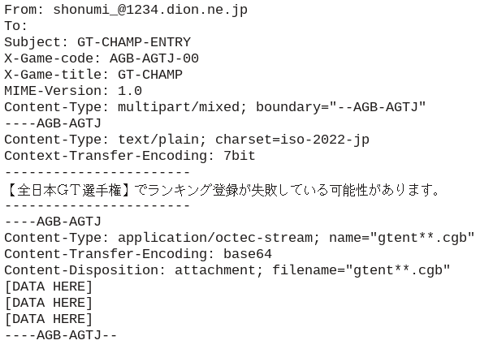
From this we can see that it's sending an email attachment with the data written in Base64 encoding. The attachment itself was called gtent**.cgb, where ** represented values of 00 through 06. Again, this was used to distinguish between the 7 available racetracks. The message within the body of the email translates to "There is a possibility that ranking registration has failed in the [All Japan GT Championship]".
Most interesting of all, however, is the lack of a recipient. I suppose normally, such an outgoing email would be rejected, but it may have had some significance when running exclusively on the DION network. It probably was a shortcut to send the email directly to staff who handled online content for the Mobile Adapter. I'm guessing the email's message was a reminder for such staff to manually verify any submitted Ghost Data. It would have been particularly bad if, for example, corrupted or hacked Ghost Data were blindly put up on the leaderboards.
Although GBE+ doesn't do anything with this information, it would be useful for those wishing to recreate Nintendo's servers. With that, however, all of Zen Nihon GT's online features had been more or less fully explored.
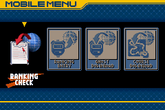 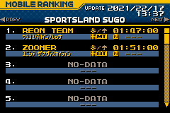 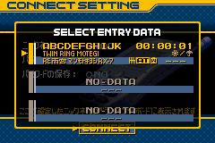
Players could either upload their own Ghosts for Ranking or download the current leaderboards.
Lag and Desync
It's been a long time coming, but it was nice to finally revisit the Mobile Adapter for an Edge of Emulation article like this. It's a shame I haven't been able to keep a more consistent schedule for putting material online. However, that's not to say nothing has been happening recently in terms of emulating the unknown. A couple of big developments for GBE+ happened in 2022, namely adding support for Kemco's Jukebox cartridge and preliminary emulation of Nintendo's Play-Yan (the original version, not the Micro). What this amounts to is turning an emulator into... a full-featured multimedia player? As strange as that sounds, that's the path GBE+ is headed down. You'll be able to listen to music, watch videos, and yes, do your own karaoke. When I say "Emulate Everything", I mean it.
Now about that book I've been writing... It's almost done. The 4th draft is halfway complete, and once it goes through yet another draft, it should be fit to publish. I expect it to be finished either late this year or early next year. Hopefully my eyeballs don't fall out from all the editing. I'll give out more details as that date gets closers, but hopefully it'll be available through Amazon as an e-book and a printed paperback version. Currently, the latest version it sits at 400 pages and has a nice glossy cover.
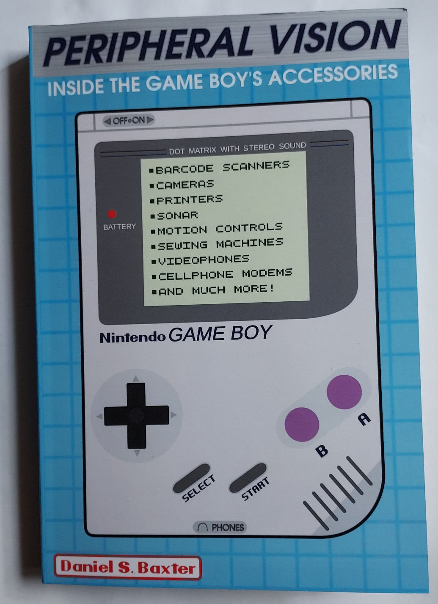
It's getting there! Just a bit more! Now has WIP covers and a spine.
At any rate, I should be able to still put out at least one more article like this before the year ends. That's the plan at least. As long as there no distractions such as Halo Infinite's Forge/Multiplayer totally work-related projects that I'm hyper-focused on. So, if you see some user with my name on XBOX Live, it's uh, definitely not me taking a break...